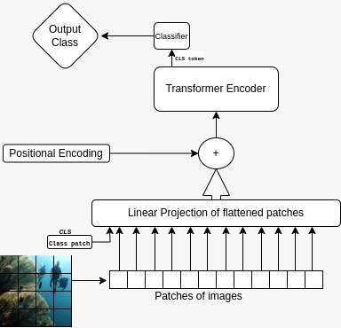
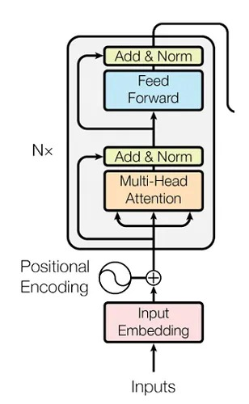
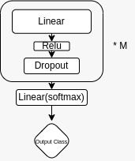
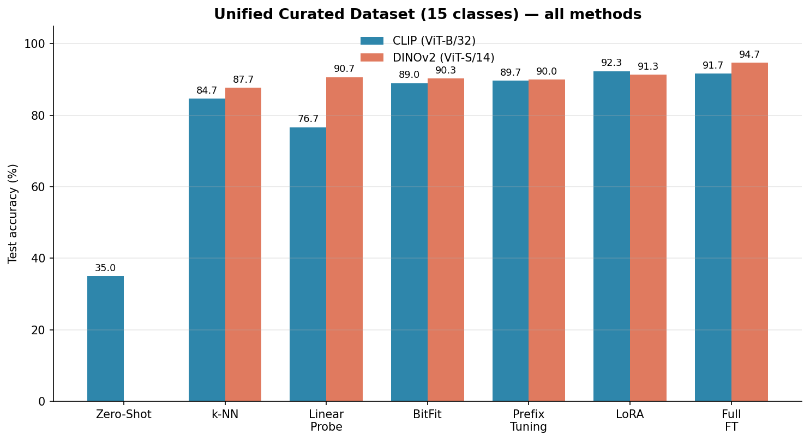
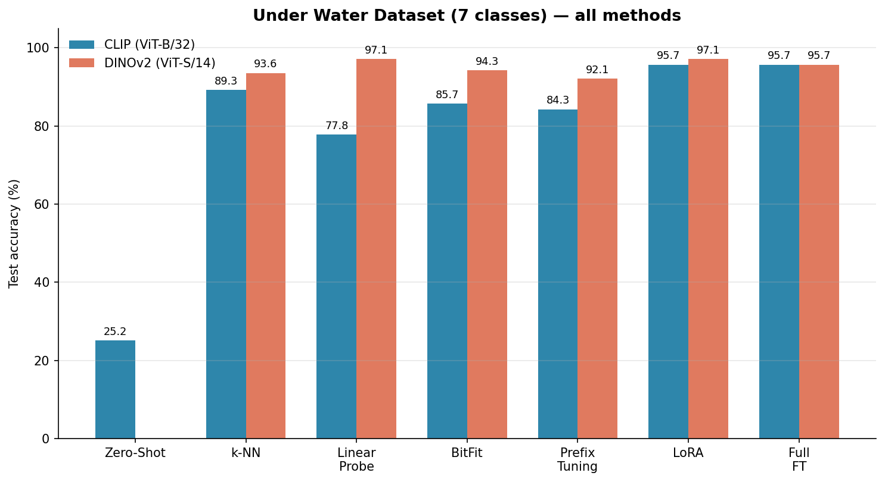

Abstract
Foundation models like CLIP and DINOv2 are powerful out of the box, but they underperform on fine-grained, domain-specific tasks. This project measures how much a few labeled samples and a little targeted tuning can close that gap — comparing zero-shot classification, k-NN and linear probing on frozen features, BitFit, prefix tuning, LoRA, and full fine-tuning across two vision backbones.
Every method was evaluated on a Unified Curated Dataset (15 classes spanning underwater, satellite, and brain-tumor MRI imagery) and its Under Water subset (7 classes with poor lighting and low contrast). The headline results: DINOv2 is a consistently stronger feature extractor than CLIP for this task, and LoRA matches full fine-tuning at a fraction of the trainable parameters.
Why adapt at all?
CLIP (trained on image–text pairs) and DINOv2 (trained self-supervised) learn general visual concepts from web-scale data. But "a fish" in the wild and "a fish" in a dark, distorted underwater camera frame are different problems. Naively applying these models to such domains — as the zero-shot numbers below show — is not competitive.
The question this project answers: given only ~50 labeled samples per class, which adaptation strategy recovers the most accuracy, and at what parameter/compute cost?
Models, datasets & setup
The two backbones
| CLIP | DINOv2 | |
|---|---|---|
| Model ID | openai/clip-vit-base-patch32 | dinov2_vits14 |
| Architecture | Vision Transformer (ViT-B/32) | Vision Transformer |
| Encoder hidden size | 768 | 384 |
| Patch size | 32×32 | 14×14 |
| Input size | 224×224 | 224×224 |
| Total parameters | ∼151M | ∼22M |
The datasets
| Feature | Unified Curated Dataset | Under Water Dataset |
|---|---|---|
| Description | Primary benchmark, curated from Kaggle sub-datasets + online images | Domain-specific subset of the Unified dataset |
| Total classes | 15 | 7 |
| Samples per class | 50 | 50 |
| Data split | 50% train (25) / 20% val (10) / 30% test (15) | 50% train (25) / 20% val (10) / 30% test (15) |
| Domains & classes | 3 domains — Underwater (7): Coral-Reef, Crab, Fish, Fish-Group, Human, Jelly-fish, Trash · Satellite (4): cloudy, desert, green_area, water · Brain Tumor (4): glioma, meningioma, pituitary, no_tumor | 1 domain — Coral-Reef, Crab, Fish, Fish-Group, Human, Jelly-fish, Trash |
Training hyperparameters
FINETUNE_EPOCHS = 30
FINETUNE_LR = 1e-4 # Learning rate
FINETUNE_BATCH_SIZE = 16
OPTIMIZER = Adam
LOSS_FUNCTION = CrossEntropyLoss
DEVICE = "cuda"
PATIENCE = 5 # Early stoppingBatch sizes: 32 for zero-shot inference, feature extraction and few-shot training; 16 for fine-tuning.
Adaptation methods
Baselines: zero-shot and few-shot
- CLIP zero-shot — no training. Text prompts
"a photo of {class_name}"are embedded and matched to image embeddings by cosine similarity. - k-NN — nearest-neighbor classification on frozen features (CLIP 512-dim, DINOv2 384-dim).
N_NEIGHBORS=5, cosine metric, distance weights. No backpropagation. - Linear probe — logistic regression on frozen features:
lbfgssolver,max_iter=1000, multinomial, L2 regularization.
Parameter-efficient fine-tuning (PEFT)
- BitFit — only bias parameters trainable; all weights frozen.
- Prefix tuning — prepends
10learnable prefix tokens (projection dim 768 for CLIP, 384 for DINOv2). - LoRA — low-rank adaptation on the Query (Q) and Value (V) projections of all 12 transformer layers.
r=8,alpha=16, dropout 0.1.
LoRA adds ΔW = BA with B ∈ Rd×r, A ∈ Rr×k, and scales the update: W′ = W + (α/r)·BA, here with α/r = 16/8 = 2.0. The result is astonishingly cheap:
| LoRA config | LoRA params | Classifier | Total trainable | % of model |
|---|---|---|---|---|
| CLIP (12 layers, Q+V) | ∼295K | ∼11K | ∼306K | 0.2% |
| DINOv2 (12 layers, Q+V) | ∼147K | ∼5K | ∼152K | 0.7% |
Full fine-tuning (ceiling)
All weights trainable at a conservative lr=1e-4. For CLIP only the vision encoder (~86M params, 12 layers) is fine-tuned with the text encoder frozen; for DINOv2 the full ~22M backbone is trained.
The model architectures



Proposed: two-stage training
Beyond single-method tuning, the report proposes a novel two-stage schedule designed to progressively adapt from heads to features:
- Stage 1 (pretraining): freeze the entire backbone and train MLP classifiers with 1, 2 or 3 hidden layers on the extracted features.
- Stage 2 (posttraining): freeze the best Stage-1 classifier and tune the feature extractor with PEFT (LoRA) or partial unfreezing (last-n layers).
Results — Unified Curated Dataset (15 classes)
Zero-shot & few-shot
| Method | Accuracy |
|---|---|
| CLIP Zero-Shot | 35.00% |
| CLIP KNN | 84.67% |
| DINO KNN | 87.67% |
| CLIP LINEAR | 76.67% |
| DINO LINEAR | 90.67% |
Fine-tuning methods
| Method | Model | Accuracy |
|---|---|---|
| BITFIT | CLIP | 89.00% |
| BITFIT | DINOV2 | 90.33% |
| PREFIX | CLIP | 89.67% |
| PREFIX | DINOV2 | 90.00% |
| LORA | CLIP | 92.33% |
| LORA | DINOV2 | 91.33% |
| FULL | CLIP | 91.67% |
| FULL | DINOV2 | 94.67% |

Results — Under Water Dataset (7 classes)
Zero-shot & few-shot
| Method | Accuracy |
|---|---|
| CLIP Zero-Shot | 25.17% |
| CLIP KNN | 89.28% |
| DINO KNN | 93.57% |
| CLIP LINEAR | 77.85% |
| DINO LINEAR | 97.14% |
Stage 2 fine-tuning
| Model | Method | Accuracy |
|---|---|---|
| CLIP | BitFit | 85.71% |
| CLIP | Prefix Tuning | 84.29% |
| CLIP | LoRA | 95.71% |
| CLIP | Full Fine-Tuning | 95.71% |
| DINOV2 | BitFit | 94.29% |
| DINOV2 | Prefix Tuning | 92.14% |
| DINOV2 | LoRA | 97.14% |
| DINOV2 | Full Fine-Tuning | 95.71% |

Two-stage training results
The staged schedule starts cheap and only unfreezes what pays off.
Stage 1 — frozen extractor, trainable classifier (Unified Curated)
| Dataset | Model | Classifier | Accuracy |
|---|---|---|---|
| Unified Curated | CLIP | 1-Layer MLP | 90.33% |
| Unified Curated | CLIP | 2-Layer MLP | 90.16% |
| Unified Curated | CLIP | 3-Layer MLP | 91.00% |
| Unified Curated | DINOV2 | 1-Layer MLP | 90.83% |
| Unified Curated | DINOV2 | 2-Layer MLP | 90.67% |
| Unified Curated | DINOV2 | 3-Layer MLP | 91.33% |
Stage 2 — frozen classifier, trainable extractor (Unified Curated)
| Dataset | Model | Stage-1 Classifier | Tuning Method | Accuracy |
|---|---|---|---|---|
| Unified | CLIP | Best MLP | LoRA | 89.00% |
| Unified | CLIP | Best MLP | Last-N Layers | 91.67% |
| Unified | DINOV2 | Best MLP | LoRA | 92.33% |
| Unified | DINOV2 | Best MLP | Last-N Layers | 92.00% |
The multi-stage strategy lands at parity with the direct fine-tuning methods — slightly better in some cases — while full fine-tuning retains the overall highest score.
Key observations
- DINOv2 is the stronger extractor. In every head-to-head (k-NN, linear probe, BitFit, LoRA, full FT) DINOv2 beats CLIP. The biggest gap is linear probing: 90.67% vs 76.67% on the Unified dataset.
- CLIP zero-shot is a poor baseline. 35.00% (Unified) and 25.17% (Underwater) — the domain gap is real, and no labels means no recovery.
- k-NN is a surprisingly strong baseline. DINO k-NN (87.67%) beats several tuned methods, including CLIP linear probing (76.67%) and CLIP BitFit (89% on a harder setting, but at zero training cost).
- LoRA is highly effective and efficient. On the Underwater dataset, DINOv2 LoRA (97.14%) matches or exceeds full fine-tuning (95.71%) while training only 0.7% of parameters; on the Unified dataset LoRA lands within a couple of points of the full-fine-tune ceiling.
- BitFit and prefix tuning are mixed. Both give a decent boost over linear probing on the Unified dataset, but are clearly the weakest fine-tuning options — and on DINOv2, prefix tuning can lose to a simple linear probe.
Bottom line: a frozen backbone plus a tuned classifier gets you ~90% accuracy with zero backbone training; LoRA closes almost all of the remaining gap at 0.2–0.7% trainable parameters.
Repository & reproducibility
The full implementation — data loaders, all six methods, the two-stage pipeline, and dataset setup guides — is open source.
git clone https://github.com/hemanthdatta/tpa-17
cd tpa-17
pip install -r requirements.txt
python main.py --all # run every method on a chosen dataset
python main.py --dataset 1 --lora # pick a dataset and a method
python main.py --all --model ViT-L-14 --epochs 100Results are saved as JSON, confusion matrices, training curves, and per-method comparison plots under ./results.